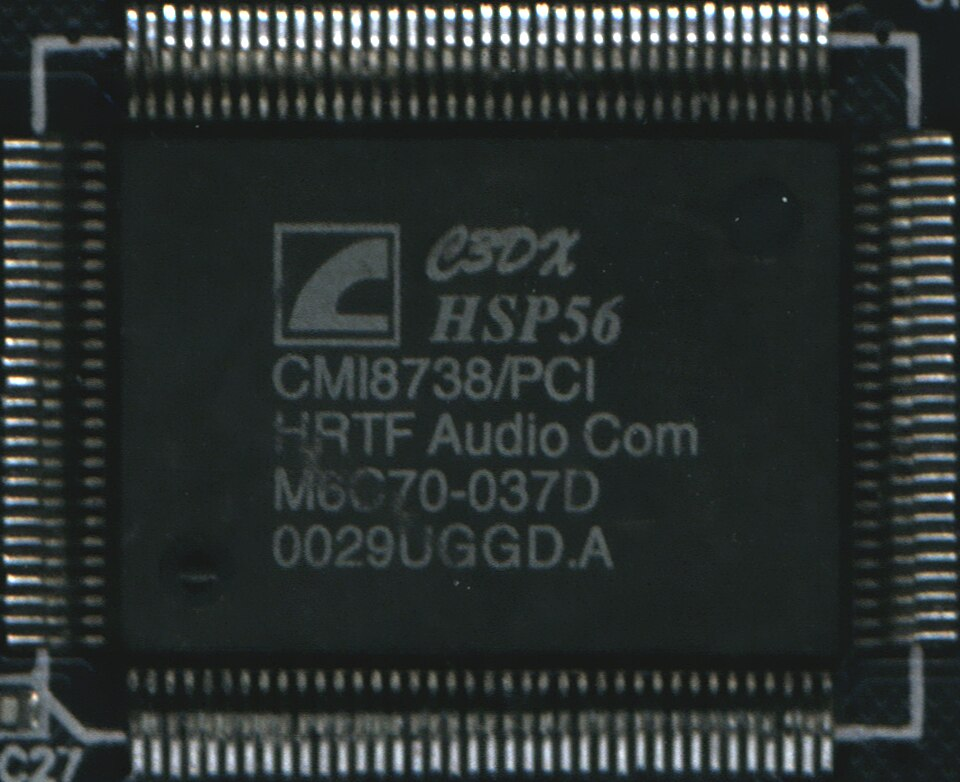

Sistema sem som
O problema
Nenhum som sai pelos alto-falantes ou pelo fone, mesmo com o volume alto e sem o mudo ativado.
Possíveis causas
A causa mais comum é o dispositivo de saída (o aparelho por onde o som deve sair) selecionado errado, algo frequente depois de conectar fones Bluetooth, monitores HDMI ou caixas de som externas. Também pode ser o serviço de áudio travado ou o driver da placa de som incompatível ou desatualizado.

Solução no Windows
Clique no ícone de alto-falante na barra de tarefas, expanda a lista de dispositivos e selecione a saída
correta. Se não resolver, execute a Solução de problemas de áudio nas Configurações ou digite
services.msc no Executar (Win + R) e reinicie o serviço Áudio do Windows.
Quando a causa é o driver, abra o Gerenciador de Dispositivos, expanda Controladores de som, vídeo e jogos, clique com o botão direito no dispositivo e escolha Atualizar driver. Se o erro continuar, desinstale o dispositivo e reinicie: o Windows reconhece a placa de som e reinstala o driver padrão.
Solução no Linux
Em Configurações > Som, escolha o dispositivo de saída correto. Para placas com várias saídas (como
HDMI e P2), o pavucontrol, na aba Configuração, permite escolher o perfil certo.
Se o som parou de repente, reinicie o servidor de som (o programa que gerencia o áudio de todos os
aplicativos) com systemctl --user restart pipewire pipewire-pulse wireplumber nas versões
recentes do Ubuntu. O comando aplay -l lista as placas de som reconhecidas pelo kernel; se
nenhuma aparecer, o problema é de driver ou de hardware.
Saiba mais
Acesse o Guia da Microsoft sobre problemas de som, veja a página Volume baixo ou microfone sem funcionar ou assista a um dos tutoriais em vídeo abaixo: